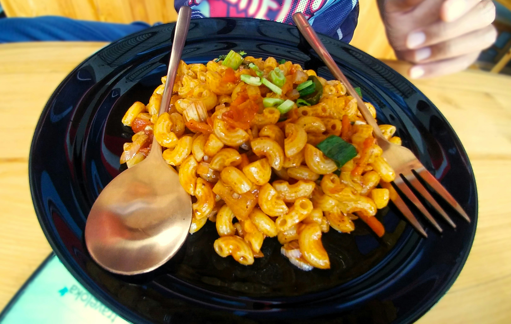

Home
Baked Brie Mac and Cheese

Description
Try this baked brie mac and cheese for an extra creamy version of a classic dish.
Ingredients
- 1 tablespoon butter, softened, for greasing
- 3 1/2 cups whole milk, divided
- 1/2 teaspoon garlic powder
- 1/2 teaspoon ground mustard
- 1/2 teaspoon paprika
- 1/2 teaspoon salt
- 1/2 teaspoon black pepper
- 2 cups elbow macaroni, divided
- 8 ounces sliced American cheese, torn into pieces
- 4 ounces Brie cheese with rind, cut into small pieces
Steps
- Gather all ingredients. Preheat the oven to 350 degrees F (175 degrees C). Grease a 2-quart square baking dish with butter.
- Combine 3 cups milk, garlic powder, mustard, paprika, salt, and pepper in a bowl.
- Place 1 cup of macaroni in the prepared dish. Top with American cheese pieces, followed by 1 cup macaroni. Pour milk mixture evenly over the casserole and cover tightly with foil.
- Bake in the preheated oven for 50 minutes. Stir macaroni mixture and cover with foil again. Reduce oven temperature to 300 degrees F (150 degrees C). Continue baking until macaroni is tender, about 30 minutes.
- Stir remaining 1/2 cup milk into the mixture. Top with Brie. Cover with foil. Return to the oven and bake for 5 minutes more. Let stand 5 minutes before serving.